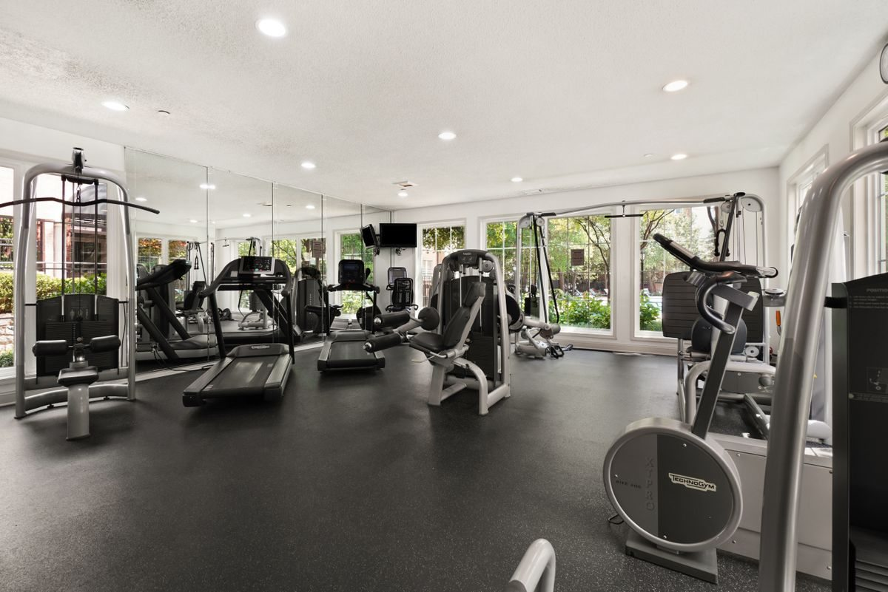
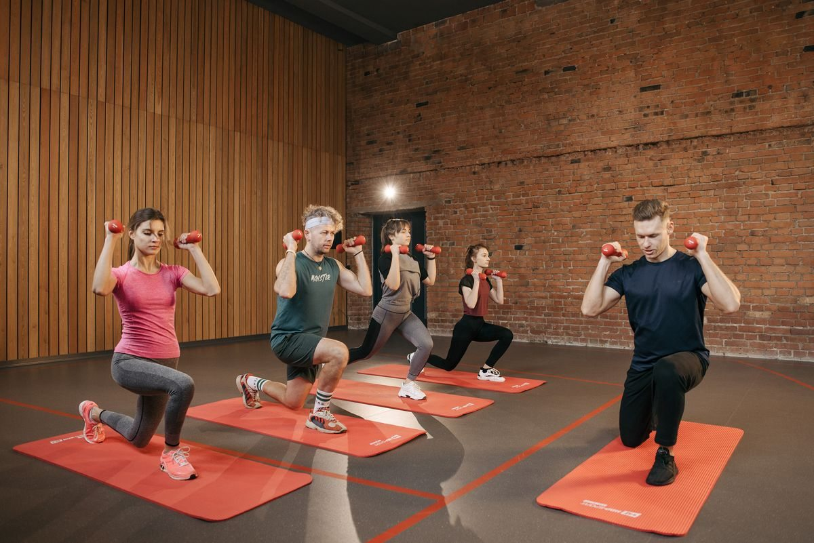

▥
MUSCULAÇÃO
Força e evolução com treino pensado para o seu nível e acompanhamento no salão.
FORÇA & HIPERTROFIA⌖ SETOR MARISTA • GOIÂNIA
Mais força. Mais energia. Mais você.
Treine com estrutura de verdade e uma equipe
que se move junto com o seu objetivo.
FOCO NA SUA
EVOLUÇÃO
01 / ENCONTRE SEU MOVIMENTO
Para sair do zero, ganhar força ou desafiar seus limites. Aqui, tem um jeito de treinar que combina com você.
Força e evolução com treino pensado para o seu nível e acompanhamento no salão.
FORÇA & HIPERTROFIAMovimentos dinâmicos que trabalham o corpo inteiro e dão mais disposição à rotina.
ENERGIA & CONDICIONAMENTOUma playlist, uma turma e muita energia para transformar cada pedalada em conquista.
CARDIO & RESISTÊNCIARitmo para se soltar. Mobilidade para se movimentar melhor, dentro e fora da academia.
RITMO & BEM-ESTAR
02 / ESTRUTURA QUE ACOMPANHA VOCÊ
Da primeira repetição ao último alongamento, cada detalhe foi pensado para você aproveitar o treino.
03 / ESCOLHA SEU PRÓXIMO PASSO
O compromisso é com você. O impulso é com a gente.
O essencial para criar sua rotina.
Plano anual • compromisso de 12 meses
Para quem quer ir além do básico.
Plano anual • compromisso de 12 meses
Seu treino, sem compromisso anual.
Plano mensal • sem fidelidade
Planos anuais: cancelamento antecipado sujeito a 10% do saldo restante. Plano mensal: solicite o cancelamento antes da próxima renovação. Valores ilustrativos desta demonstração.

JUNTOS, A GENTE VAI MAIS LONGE.04 / QUEM SE MOVE COM VOCÊ
Professores que escutam seu objetivo, respeitam seu ritmo e comemoram sua evolução.
Musculação e preparação física
Funcional e mobilidade
Bike indoor e condicionamento
05 / CABE NA SUA ROTINA
Seg–sex: 5h30 às 23h
Sábado: 7h às 16h
Domingo: 8h às 12h
Musculação e cardio disponíveis durante todo o funcionamento. Aulas coletivas incluídas nos planos Plus e Flex, conforme lotação.
06 / O QUE MOVE A NOSSA COMUNIDADE
O melhor treino é aquele que dá vontade de repetir amanhã.
★★★★★“Eu achava que academia não era pra mim. Aqui tive orientação desde o primeiro dia e finalmente consegui manter uma rotina.”
★★★★★“Saio do trabalho e venho direto. A estrutura faz diferença, mas a energia dos professores é o que me faz voltar.”
★★★★★“Comecei pela musculação e me apaixonei pela bike. Ter várias modalidades deixou o meu treino muito mais leve.”
07 / NOS ENCONTRAMOS NO MARISTA
Setor Marista, Goiânia — Goiás
Conheça o bairro no mapa e fale com nossa equipe para planejar sua visita.
Conversar pelo WhatsAppSEM DÚVIDAS. SÓ MOVIMENTO.
Sim. A proposta da Move Fit é acompanhar você desde o começo, com orientação e um treino adequado ao seu nível.
Fale pelo WhatsApp para combinar uma visita e consultar disponibilidade para experimentar uma modalidade. O clique abre a conversa; o agendamento é combinado com a equipe.
As vagas são limitadas por turma. Consulte a equipe antes da aula para verificar disponibilidade e combinar sua participação.
Escolha seu plano e clique no botão de interesse. A conversa começa pelo WhatsApp, onde você pode tirar dúvidas e consultar as condições antes de contratar.
SEU PRIMEIRO PASSO NÃO PRECISA SER PERFEITO.